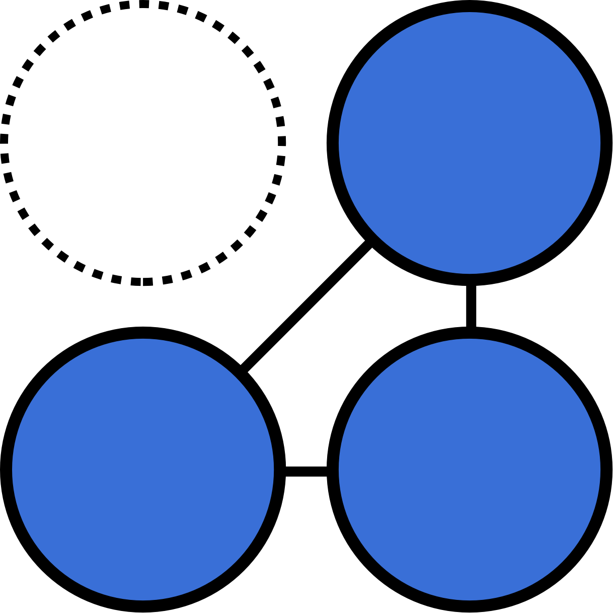
2020 Product Designers: Yoonjo Choi User Researcher: HC Lai
DSP (Demand Side Platform) is an ad platform for advertisers to run their online ads. The campaign lifecycle can be divided into four stages — Planning, Campaign Creation, Campaign Management and Reporting.
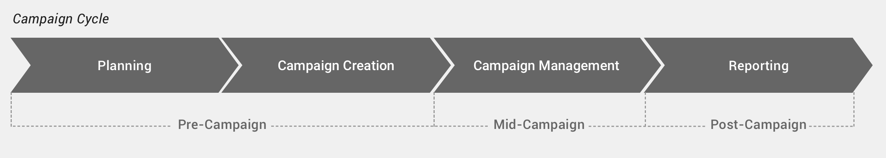
The DSP has multiple insights tools that intend to help the user throughout this process. Over time, 7 tools had been built by different product owners and resulted in providing siloed experiences.
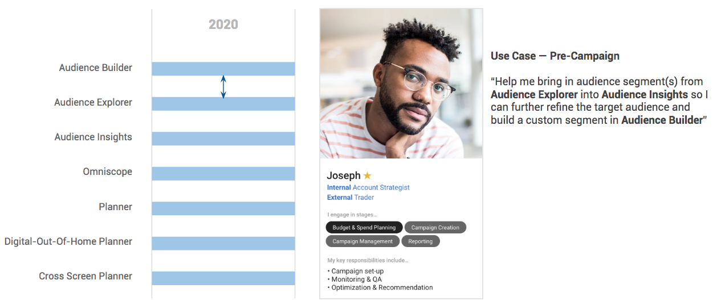
Deliver a proposal of how to better the experience of the isolated tools on the DSP Platform.
Worked with our User Researcher HC Lai and participated in 17 user sessions to understand the campaign cycle and how each tool fits into each stage of Pre, Mid and Post Campaign.
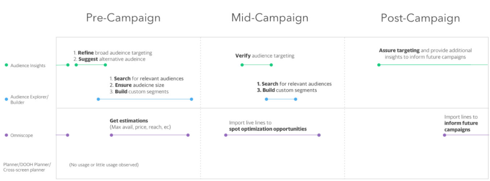
Diagram by User Researcher, HC Lai
Data Range: Oct 1, 2019 - Dec 31,2019Internal Users
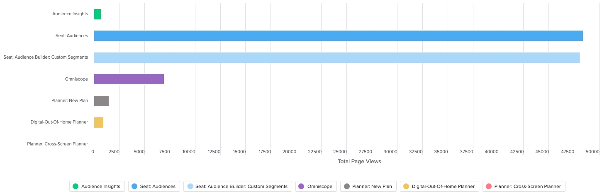
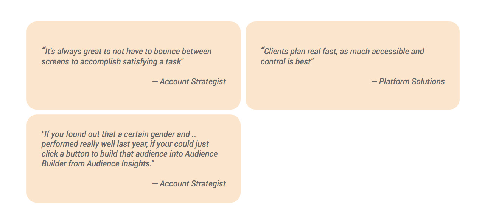
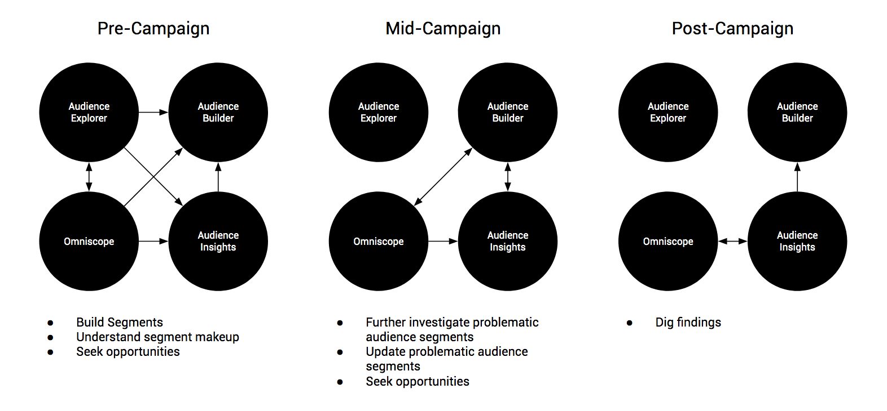

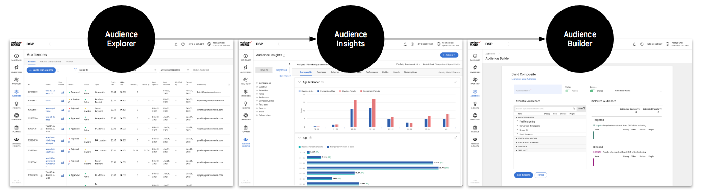
Joseph searches audience segments of interest and selects segments in the data-table using the checkbox. Then clicks "Actions" button and selects Audience Insights in the dropdown option. Audience Insights is launched in a new tab in order to maintain the workflow of Audience Explorer.
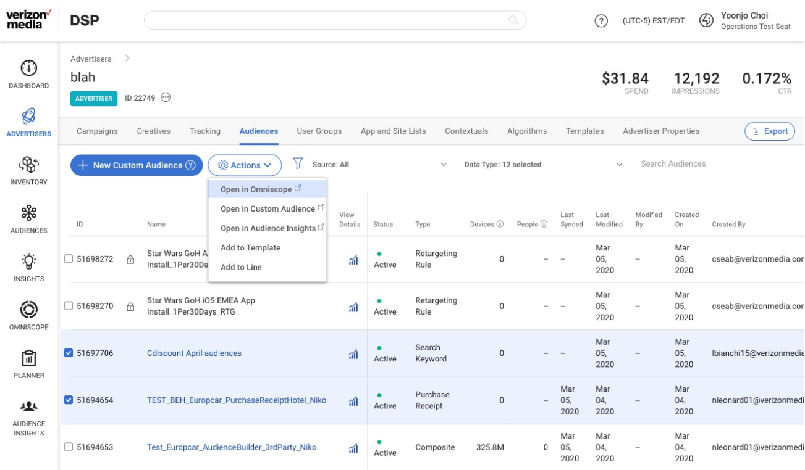
In the new tab, Joseph can see the detailed insights of the segments he had selected. He wants to see how he can refine his audience so he can be cost effective while being spot on in audience targeting (audiences have data fees). Joseph discovers that his audience of interests are heavy users of amazon.com and decides to specifically target this audience segment so he adds it to his "Custom Audience Cart"
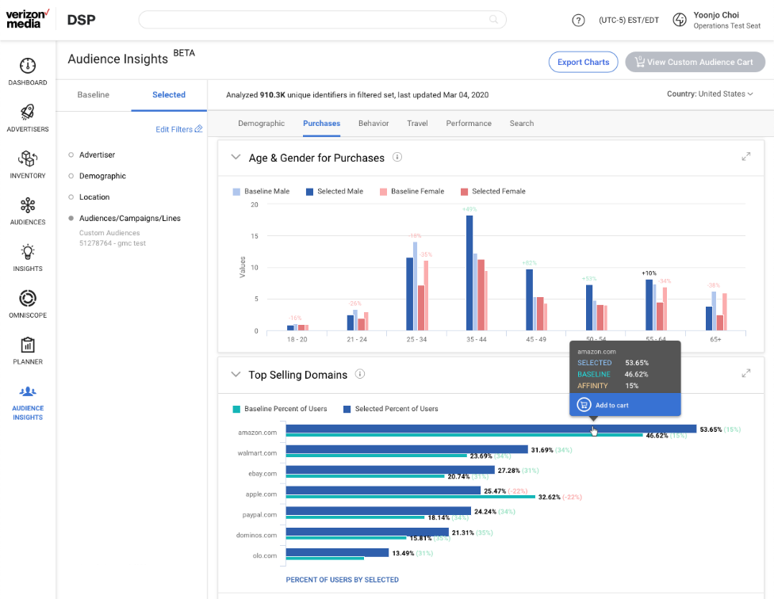
Joseph continues to refine this desired audience segment and adds to the cart. As segments are selected, the "View Custom Audience Cart" button on the top right gets activated.
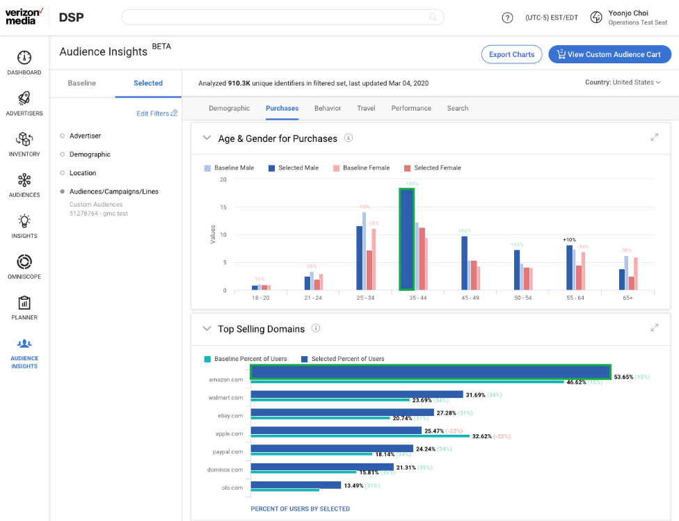
Joseph can click the "View Custom Audience Cart" to see a summary of his selections. Once he is happy with his curation, he can open the selections in Audience Builder.
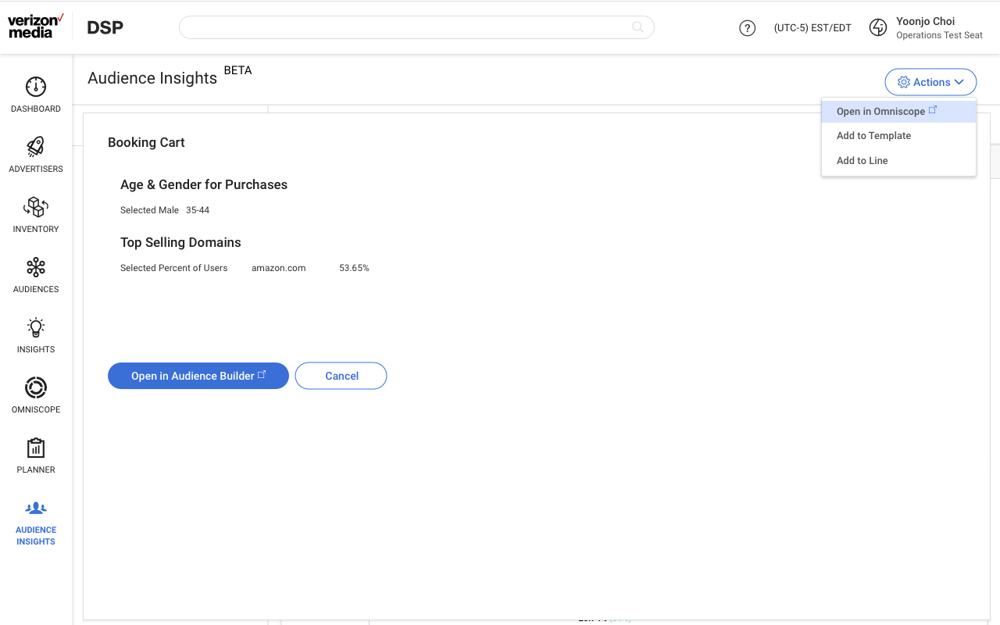
Once segments are ported into Audience Builder Joseph can save it as a custom segment and later target his campaign.
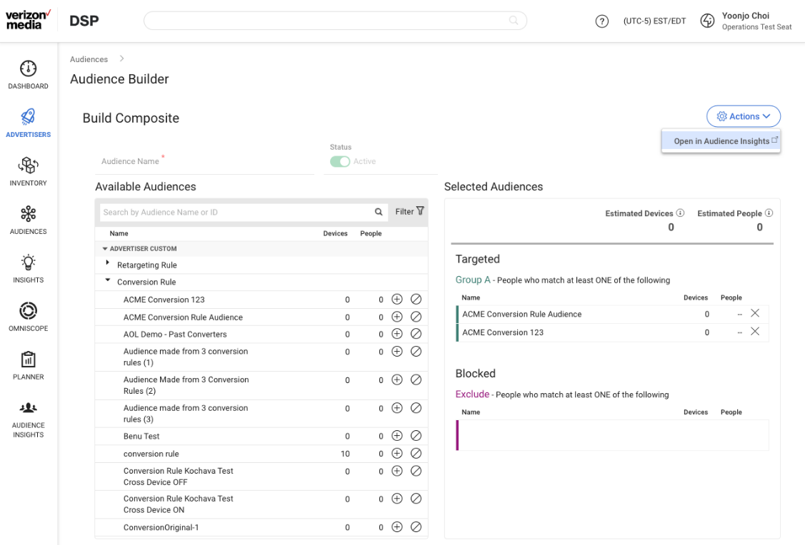
Designed by Eugenia Lee
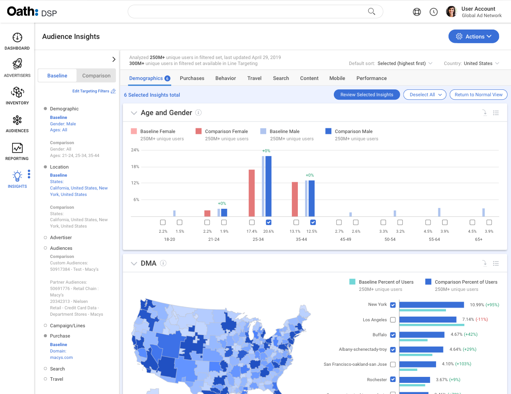
Designed by Eugenia Lee
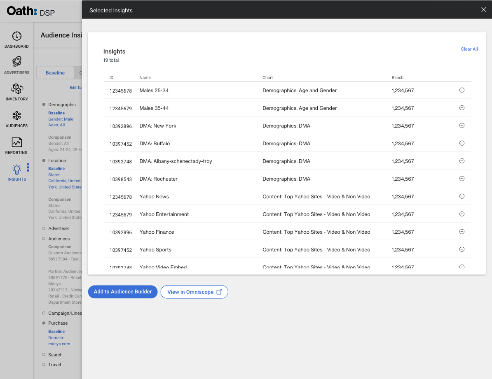